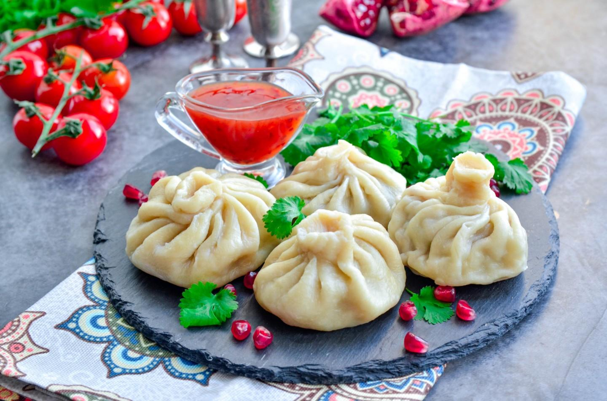
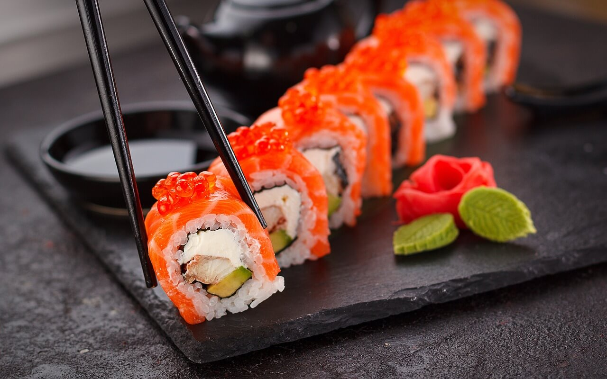

Моё любимое блюдо
Рецептик
посмотреть больше
Пицца
Ингридиенты:

Пшеничная мука500 гр
Вода250 мл
Соль 1 чайн.л.
ДЛЯ НАЧИНКИ:
Говядина 500 гр
Лук репчатый2 шт.
Вода 500 мл
Зелень кинзы1 пуч.
Петрушкапо вкусу
Специи сухиепо вкусу
Перец красный молотыйпо вкусу
Перец черный молотыйпо вкусу
Соль по вкусу
Узнать рецепт
Хинкали

2 стакана японского риса,
форель,
огурец,
2 ст.л. японского уксуса,
2,5 ст.л. сахара,
2 ч.л. соли,
васаби,
нори,
гари,
соевый соус.
Узнать рецепт
Суши

Борщ